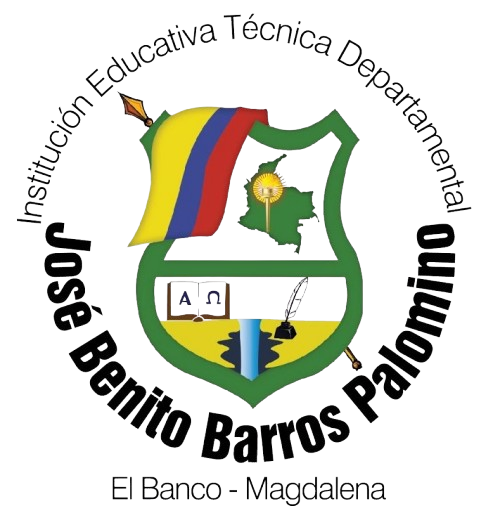

Ciencia
Observacion, experimentacion y pensamiento critico para comprender el mundo.

Institución Educativa Técnica Departamental José Benito Barros Palomino
"Asumiendo acciones sostenibles"
Experimenta, Innova y Aprende
Explorar la FeriaDías
Horas
Minutos
Segundos
La Institución Educativa Técnica Departamental José Benito Barros Palomino invita a la comunidad educativa a participar en un encuentro de ciencia, tecnología, ingeniería y matemáticas orientado al desarrollo sostenible.
Observacion, experimentacion y pensamiento critico para comprender el mundo.
Herramientas digitales, programación y prototipos al servicio de la comunidad.
Diseño, construcción y mejora de soluciones con enfoque sostenible.
Análisis, patrones y modelos para tomar mejores decisiones.
La agenda está organizada para que cada institución pueda instalar, participar y presentar sus proyectos con claridad.
La feria se realizará en las instalaciones de la Institución Educativa Técnica Departamental José Benito Barros Palomino, un espacio para compartir proyectos, aprender e inspirar nuevas acciones sostenibles.
El Banco - Magdalena
Identidad visual, invitación y piezas gráficas oficiales de la I Feria STEM Conalbista 2026.